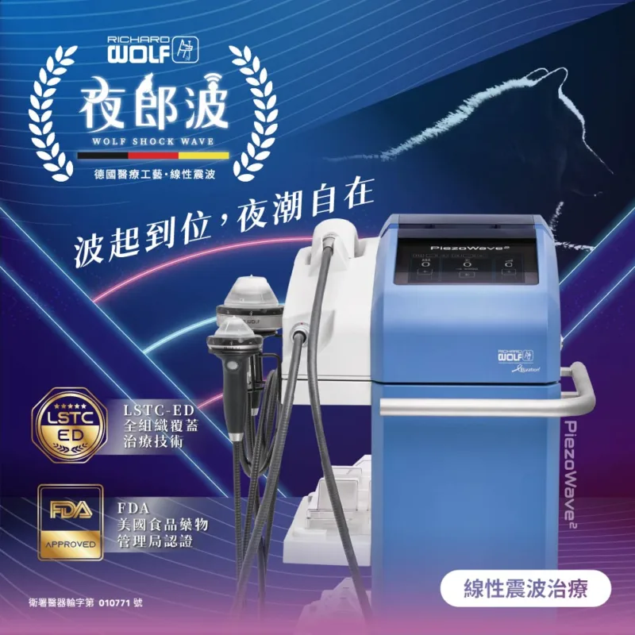
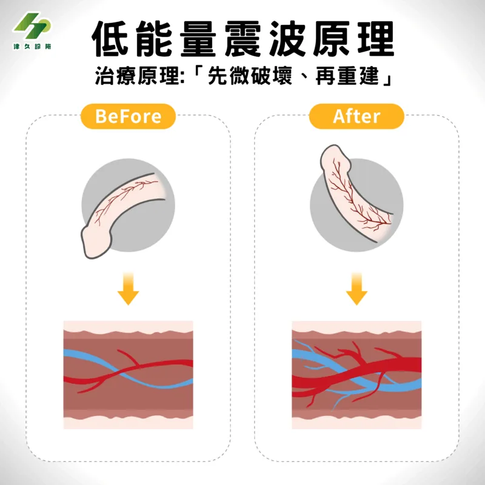
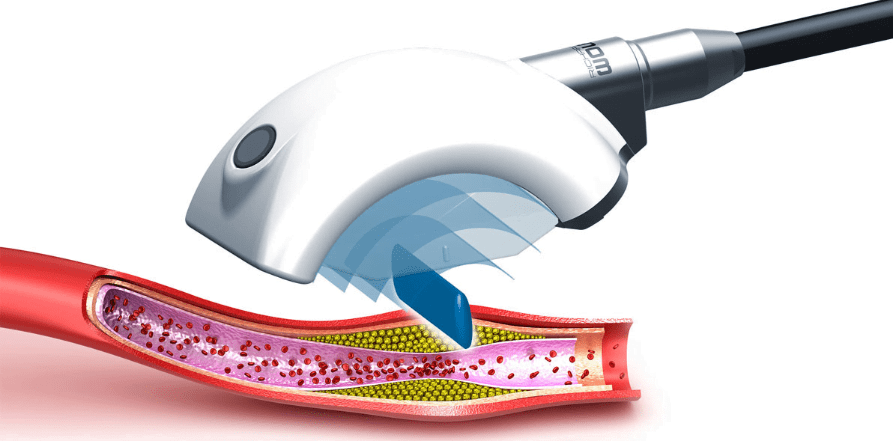
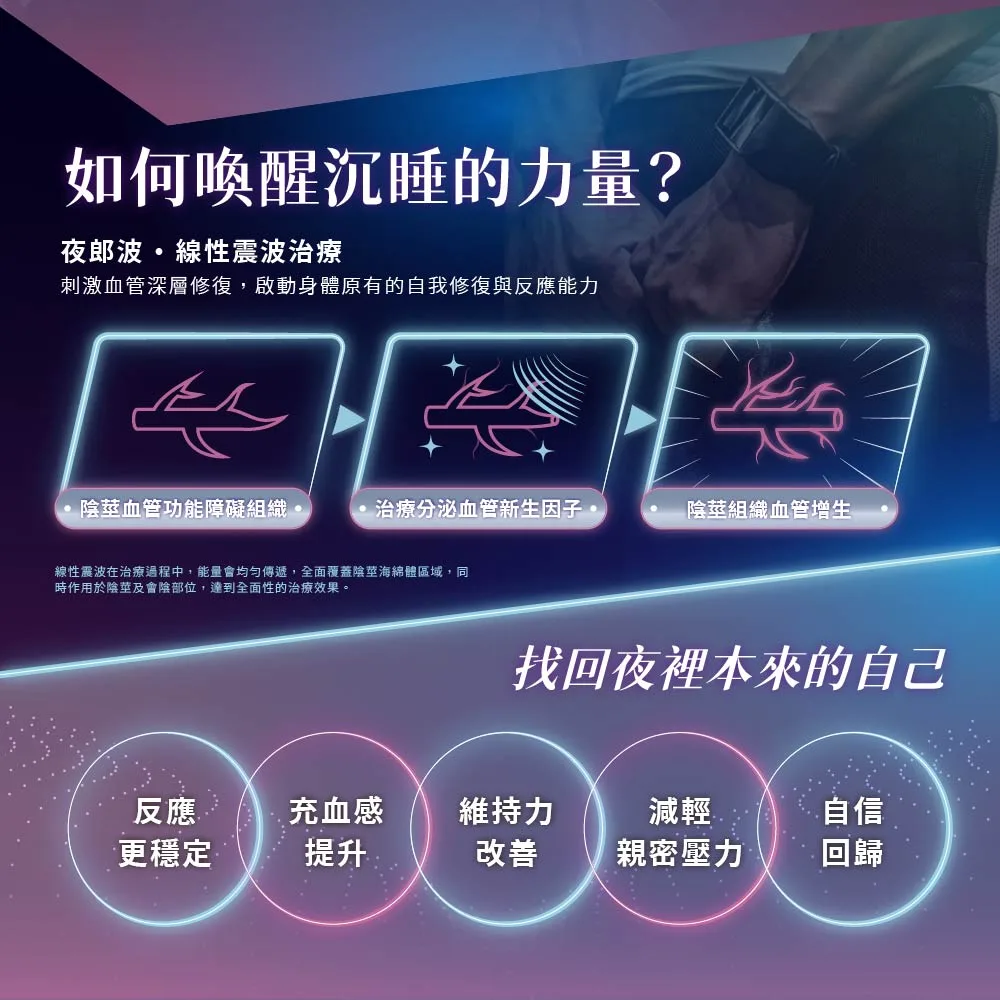
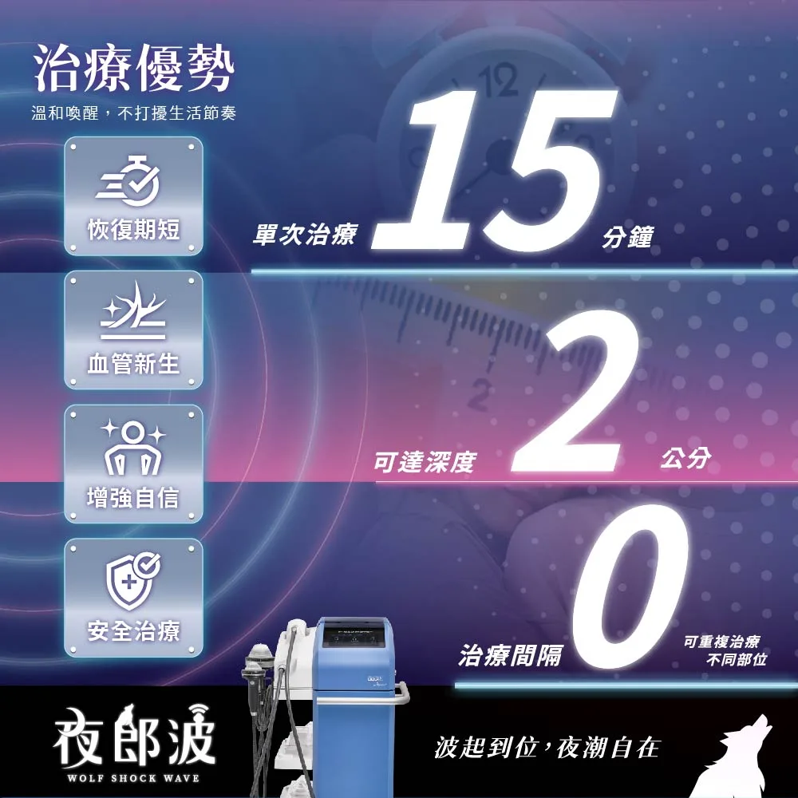
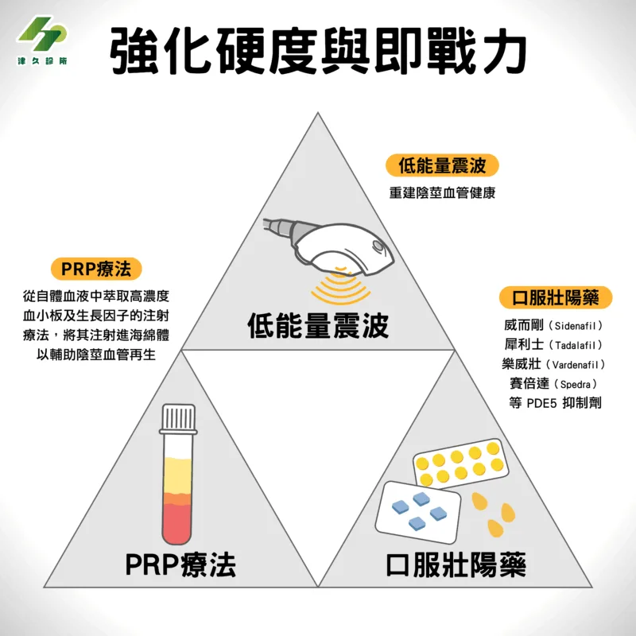

促進新生血管生成，增強局部血流
透過低能量震波可幫助血管新生，解決「血管性病因」的勃起障礙問題！
低能量震波（Low-Intensity Extracorporeal Shock Wave Therapy, LI-ESWT）是近年出現的一種治療男性性功能障礙的新技術，歐洲泌尿醫學會將其列為第一線勃起功能障礙治療法。
低能量震波治療具有促進血管和組織新生的功效，施打低能量震波之後可幫助血管新生，主要能改善「血管性病因」導致的勃起性功能障礙。
無論您的勃起功能現狀如何，甚至只是想未雨綢繆先做好保養，只要經過醫師評估後都可以採取低能量震波這種免吃藥、免打針、免住院、最前端的治療方式。

津久診所的低能量震波治療使用 RichardWolf 獨家的線性聚焦型震波技術(LSTC-ED®)，原理是將低能量超音波作用於組織之上，造成組織周邊的血管及內皮微小的破壞，刺激組織再生，進而活化幹細胞及促進生長因子分泌，刺激身體產生更多膠原蛋白，讓組織變得更有彈性，也讓平滑肌的運作更順暢，最終達到血管、神經再生的目的，也能讓您的陰莖整體機能變得更強、更有力。
由醫師施打，在正確的發數與能量之下，利用低能量震波進行治療可促進陰莖海綿體血管的新生，讓陰莖組織重啟修復，使得陰莖勃起時充血量增加，最終達到更好的硬度。

延伸閱讀：〈低能量震波是什麼？治療費用多少？有健保嗎？為什麼不用吃藥、打針或開刀，就能讓GG硬度大升級？一篇通通了解！〉
目前通過衛服部核准治療的適應症：
(1) 泌尿科／勃起功能障礙、慢性攝護腺炎
(2) 骨科、復健科／關節炎、骨質再生治療
夜裡的狀態，不如以往？
其實親密時刻的反應，與血流循環密切相關
血管性勃起功能障礙
當血管功能下降，出現阻塞
血流無法順利進入，親密時的反應就會變慢、不穩定
──別擔心，您並不孤單。我們給您最好的解決辦法！
津久診所 x 泌密會客室在治療前會先全面評估患者是否有進行低能量震波治療的必要性，醫師會先為您判斷您的「勃起功能障礙」是哪一種類型？
「勃起功能障礙」可分為：心因性、血管性、混合性
若患者的情況僅僅是心因性因素導致，那就不適用於低能量震波療程。
津久診所的主治醫師會先於看診時進行評估，若有需要，將會進行進一步檢查。
若您有膽固醇問題、心血管疾病、糖尿病、腎功能病變等情形，又或者是有抽菸習慣，且同時又有勃起功能障礙問題，那麼您有血管性勃起功能障礙的可能性將大幅提升。若您不想使用藥物治療、更想選擇能根本解決問題的療程，又年滿 20 歲以上，那麼低能量震波就是您的治療方式首選。
津久診所的醫師會使用「探頭」治療陰莖本體，並沿著血管方向來回移動。這樣的作法能將能量均勻的傳導，利用震波特性改善局部血流循環，讓您重獲性福人生！
治療後，由醫師親自在 Line 上持續追蹤情況，並全面講解後續相關所需衛教知識。兩位醫師會輪流親自回覆訊息，若您有問題，都能即時獲得醫師本人的解答，安心又放心！

Richard Wolf 線性震波技術 (LSTC-ED®) 是目前全球領先的醫學療法之一，專為治療血管性勃起功能障礙而設計，經過多項研究證明在治療男性勃起功能障礙時具有卓越效果。 這項治療透過精準震波，刺激陰莖內部血管與組織再生，並有以下三大好處：
透過低能量震波可幫助血管新生，解決「血管性病因」的勃起障礙問題！
免開刀、免吃藥、免住院，透過自體修復讓血管重生，真正從根本改善病因。
不想靠藥物？想真正處理根本上的問題？那你更應該選擇低能量震波治療！


攝護腺炎一般被分類為：
急性細菌性攝護腺炎症狀突發且明顯，畏寒高燒、排尿困難、劇痛，透過尿液或血液檢測即可確認感染，雖然病情危急診斷卻不困難，通常單用抗生素治療就可獲得不錯療效。
然而，慢性攝護腺炎相較之下就棘手許多。而且，在泌尿科門診病人中，這類病人佔了可觀的比例。若在臨床上我們發現男性排尿不順暢、頻尿、小便無力、尿道不舒服，下腹或鼠蹊部或陰囊脹痛，甚至早洩或是勃起功能障礙等症狀反反覆覆地發生，且排除了感染、結石或腫瘤等問題時，就有可能是慢性攝護腺炎。
一般來說可以透過藥物治療，如：抗生素、止痛消炎藥、甲型阻斷劑（治療攝護腺肥大的藥，但效果較慢）等；物理治療則可採攝護腺按摩、按摩、熱療等方法，但效果容易不彰。這個時候我們可以考慮透過低能量震波治療攝護腺周邊區域，透過精準的功率調整和醫師熟練的手法，可透過探頭使周邊組織的血管新生、改善骨盆腔血液循環、放鬆骨盆底肌肉，進而達到預防和治療的目的。
推薦：可選擇搭配 PRP 療法，雙管齊下，可進一步增強效果。
您也許聽過「PRP」（PRP是 Platelet-rich Plasma 的英文縮寫，中文是「高濃度血小板血漿」，也是增生治療法與再生療法的一種），這是近年相當流行的治療方式之一。
其原理是從患者自體血液中提取和濃縮血小板，再注射到陰莖海綿體當中，以促進血管新生。也稱做「自體血小板注射療法」。
由於血小板中含有促進血管生長的再生因子，因此注射從血小板中萃取出來的「生長因子」到陰莖海綿體後可以產生更好的治療效果。近期的研究更證實：採取低能量震波治療時若能同時結合 PRP 療法，雙效合一，能取得更顯著的效果。[註1]
故若想在更短時間內就取得更好的療效，可以在經過醫師諮詢後將兩種療法結合並行，同時治療。

PRP 注射治療禁忌症：
其他不建議採取 PRP(自體血小板注射) 療法的族群：
註1：Dogan K, Cil G. Erectile Function Recovery Using Shockwave and Platelet-Rich Plasma: A Single-Centre Prospective Comparative Study. Arch Esp Urol. 2025 Sep;78(8):1029-1036. doi: 10.56434/j.arch.esp.urol.20257808.135. PMID: 41111374.
前醫學中心泌尿科主治醫師陳偉傑、羅詩修、李齊泰、吳致寬醫師替您親診並親自操作治療（絕非坊間僅為護理師或其他非醫療人員操作），並為您量身打造醫療計畫，絕對專業，能對症下藥解決問題，讓您免於擔憂
本器械為 2025 年最新型機種
津久是泌尿科界率先採用此型器械的診所
德國精工品質，深耕醫療科技超過30年，值得您信賴
德國原裝進口 - 衛署醫器輸字第010771號
津久診所主治醫師群的治療不僅有效、無恢復期，還能讓您免除傳統治療所帶來的可能風險
可當日預約，當日治療，治療過程快捷；一人一間治療室，絕對尊重患者隱私
| 療法名稱 | 副作用 | 不便性 | 行房準備 | 療法效果 |
|---|---|---|---|---|
| 低能量震波治療 | 無 | 無 | 無 | 促進自體回復，從根本改善與治療 |
| 口服藥物 | 頭痛、頭暈、臉紅、視覺異常、肌肉痠痛等症狀 | 需隨身攜帶藥物 | 需於行房前 30-60 分鐘服藥 | 短時間放鬆海綿體、平滑肌的血管擴張 |
| 真空吸引器 | 瘀斑、瘀青、皮膚腫痛、擦傷、腳痙攣 | 需隨身攜帶，且需與伴侶溝通使用時機 | 需於行房時配戴環筒狀器具 | 應用真空、負壓原理，使血液短暫滯留於陰莖 |
| 海綿體注射 | 勃起時疼痛、勃起時間過長、可能導致陰莖纖維化 | 需隨身攜帶針具，且需注意保存 | 需於行房前 5-10 分鐘對陰莖作針具注射 | 固定時間內使陰莖流入定量血液 |
| 人工陰莖植入 | 需經過侵入性手術及麻醉，有一定風險 | 根據款式不同，有難收回、勃起慢等缺點 | 根據款式不同，有不同啟動方式 | 藉由人工陰莖取代充血海綿體，模擬勃起功能 |
陳偉傑 醫師
『創造非凡精彩人生』
健康，其實是一個動詞，需要通過努力與踏實砌成的動詞，很多人會說奮鬥不一定會成功，但我們要說：「不奮鬥，絕對失敗」只有奮鬥過的人生，才能不留遺憾、才能更加精彩也才能至善至美。

羅詩修 醫師
『捍衛男性泌密健康』
泌密健康，就四個字，但它並不會讓你一輩子都過得那麼容易，轉機就在於你堅強的那一刻，你的人生，會因為你的泌密健康，過得更性福美滿，也過得更加精彩

A：治療過程多少會感到些許剌痛，相較於前幾代的器械，多數病患回饋：「疼痛感相當於被橡皮筋輕彈 GG ，如果將疼痛感量化成 1-10 分的話，打震波的痛感約在 0-1 分之間」。
經過專業主治醫師的評估後，可依個人忍受程度調整治療的發數、強度和頻率，以達到最好的治療效果。
A：根據病人個人情形、病情、醫師的見解而會有所不同。通常療程的進行是一個禮拜 1-2 次，一次 10-15 分鐘，持續 4-6 次不等。
一般來說在初次或是第 2-3 的療程後病患就會有所感覺，也有些人會在第一次打完之後就感受到有差異。
A：可以將低能量震波震波想像成類似鳳凰電波的治療，打完震波後會需要一些時間，讓身體自行修復改善陰莖血流與神經循環。在療程結束後，多數患者的效果平均可維持 12～18 個月以上，若能將生活習慣調整得比較健康，且無抽菸習慣，成效可以維持更久。
A：沒有恢復期，基本上當天單次的治療療程完畢後即可正常生活。除非有疼痛或不適感才需要暫停，否則當天就可以開機使用。
A：可以，依據個人需求與情況，醫師也可能會在低能量震波治療後開立壯陽用的口服藥給病人。
震波能改善組織、結構與血流，讓血管再生；而口服藥則能協助血管擴張。兩者可以起到互補的功效，讓治療成效更好。
A：無副作用。但治療後，有極少比例的患者其部位會產生些許腫脹或疼痛，這些現象約在 3 - 5 天後會慢慢緩解，並不影響日常生活。
A：
A：此療程為自費項目，健保無給付。
【本資訊無法取代醫師親自關心您；若有副作用等使用問題，請洽醫師諮詢。】
【本網頁以介紹醫療新知與衛教宣導為目的，非為廣告內容，並依據衛署醫器輸字第010771號仿單說明。 詳細療程效果與方式等資訊，需以醫師親自說明為準。】
津久診所 台北市中山區松江路276號3樓
查看診所位置（Google 地圖）捷運
橘線(中和新蘆線)行天宮站的4號出口，出站後右轉步行40秒就可以看到津久診所的大招牌，搭電梯上3樓。
開車
1.台灣聯通停車場-將捷二場(停車塔，眾多信用卡可停車折抵): 台北市中山區松江路336號
2.聯邦佳佳大樓停車場(地下平面停車場): 台北市中山區松江路235巷22號
坐公車
1.捷運行天宮站(松江路) 109,1550A,203,214, 214直,222,26,277,279,280,280直,41,49,5,5203A,612,676,9069,9069A,945, 松江新生幹線,林口-台北長庚醫院,紅57
2. 松江新村 214, 214直,286副,49,9069,9069A,945
3. 民權松江路口 1841,1841A,1842,1842A,225,225區,5250,5250A,617,617副,63,685,688,801,803,內科通勤專車18,敦化幹線，民權幹線,紅29,紅31